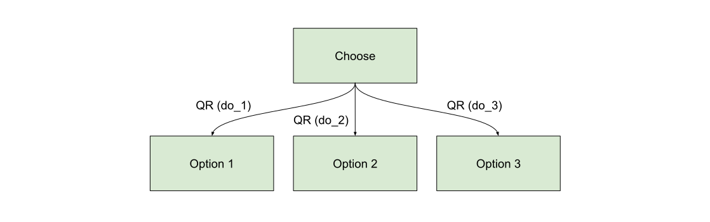
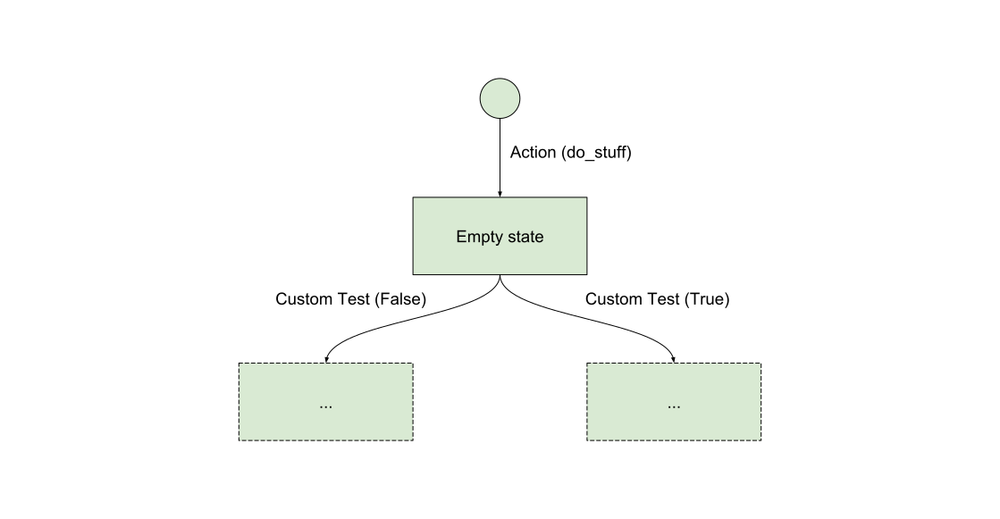

Patterns¶
After creating bots for some time, a few patterns emerge. Here’s a list of flow patterns that might help future bot builders to navigate in this new way of thinking.
Branch¶
Usually you can use quick replies (or assimilated) to create a branching pattern. Aka to make the user choose a direction to take in the flow.

There is two ways of doing this:
- Either by using buttons (FB or Telegram by example) which trigger a
Postbackmessage. In this case, you can useActionas trigger. - Either by using quick replies (FB only). In this case, the
Choicetrigger is particularly fitting for your need.
Example of a Choice trigger to do some branching:
trg.Choice.builder(slug='foo')
Filter¶
The filter pattern is similar to the branch pattern in the sense that the user is presented with some choices (as buttons or quick replies), however when they click the buttons the state will loop back onto itself and possibly change some filtering parameters as to what should be displayed.
Example of a Choice trigger to do some filtering:
trg.Choice.builder()
Background check¶
Sometimes you want to take different branches depending on things that you know about your user. By example, is they linked to your website or just anonymous?

This kind of check usually requires you to implement your custom trigger because the check you are doing is a call to your API.
Please note that each trigger is evaluated individually and in parallel.
So for instance, if your Custom Test is an API call, this would
trigger two simultaneous calls to the remote API, which is not
necessarily a good idea. In order to avoid this, instead of inheriting
from BaseTrigger you can rather implement a SharedTrigger which is
specifically designed for this kind of cases. By example:
from bernard.engine.triggers import SharedTrigger
from .api import custom_check
class ApiCallTrigger(SharedTrigger):
def __init__(self, request, expect):
super().__init__(request)
self.expect = expect
async def call_api(self):
return await custom_check()
async def compute_rank(self, value):
return 1. if value == self.expect else .0
In the previous example, custom_check() performs the check and returns
a boolean. The call_api() will only be called once.
Then the compute_rank() function will be called with the resulting
value as many times as the check exists.
Please note that for this to work, you need to create internal
transitions. By example:
transitions = [
Tr(
dest=EmptyState,
factory=trg.Action.builder('do_stuff'),
),
Tr(
dest=StateIfTrue,
origin=EmptyState,
factory=ApiCallTrigger.builder(expect=True),
internal=True,
),
Tr(
dest=StateIfFalse,
origin=EmptyState,
factory=ApiCallTrigger.builder(expect=False),
internal=True,
),
]